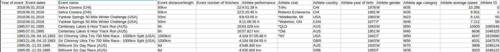

Aleksandar Stojanović
Analiziranje podataka vezanih za učinak učesnika ultramaratona, kao i analiza performansi trkača u realnom vremenu.
Analiza učinka učesnika ultramaratona u periodu od 1798. do 2022.
Dataset preuzet sa linka
Year of event,Event dates,Event name,Event distance/length,Event number of finishers,Athlete performance,Athlete club,Athlete country,Athlete year of birth,Athlete gender,Athlete age category,Athlete average speed,Athlete ID
2018,06.01.2018,Selva Costera (CHI),50km,22,4:51:39 h,Tnfrc,CHI,1978.0,M,M35,10.286,0
2018,06.01.2018,Selva Costera (CHI),50km,22,5:15:45 h,Roberto Echeverría,CHI,1981.0,M,M35,9.501,1
2018,06.01.2018,Yankee Springs 50 Mile Winter Challenge (USA),50mi,9,9:53:05 h,"*Middleville, MI",USA,1983.0,M,M23,8.141,55
2018,06.01.2018,Yankee Springs 50 Mile Winter Challenge (USA),50mi,9,11:09:35 h,"*Waterloo, ON",CAN,1977.0,F,W40,7.211,56
1995,07.01.1995,Centenary Lakes 6 Hour Track Run (AUS),6h,16,63.029 km,*QLD,AUS,1943.0,M,M50,10505.0,1065546
1995,07.01.1995,Centenary Lakes 6 Hour Track Run (AUS),6h,16,57.817 km,*Old,AUS,1951.0,M,M40,9636.0,1046325
1993,21.09.-04.10.1993,Sri Chinmoy Ultra Trio 700 Mile Race - 1000km Split (USA),1000km,4,10d 07:05:48 h,*NY,USA,1942.0,F,W50,4047.0,1615990
1993,21.09.-04.10.1993,Sri Chinmoy Ultra Trio 700 Mile Race - 1000km Split (USA),1000km,4,10d 08:04:55 h,,GBR,1943.0,M,M50,4031.0,1047570
1995,05.-11.03.1995,Millicent Six Day Race (AUS),6d,4,548.400 km,,AUS,1920.0,M,M70,3808.0,1046124
1995,05.-11.03.1995,Millicent Six Day Race (AUS),6d,4,435.600 km,,SRB,1955.0,F,W35,3025.0,1046122

Budući da postoje dva tipa maratona, ograničeni dužinom staze i ograničeni vremenom, skup podataka bih particionisao po tom kriterijumu radi kasnije lakse obrade.
Treba normalizovati podatke koji su vezani za vreme i predjeni put
U trkama koje su duzinski ograničene, 'performance' kolona sadrži vreme za koje je takmicar presao maraton, a 'average speed' je je prosecna brzina izražena u km/h
U trkama koje su vremenski ograničene, 'performance' kolona sadrži broj pretrčanih kilometara, a 'average speed' je broj pređenih metara po satu
Pre vecine upita maratoni su prethodno grupisani u odnosu na njihove duzine/trajanja i upiti su zatim radjeni nad pojedinacnim grupama
Kod upita po starosnoj dobi grupisati u starosne grupe
Praćenje performansi učesnika maratona u realnom vremenu.
Dataset preuzet sa linka
Datetime;Latitude;Longitude;Altitude;Distance;HeartRate;Speed;Cadence;Watts
2020-10-10 10:01:56+00:00;61.49964236654341;23.759590834379196;97.80000305175781;0.0;123;1.437000036239624;None;None
2020-10-10 10:01:57+00:00;61.49965829215944;23.759586475789547;97.0;1.7899999618530273;124;1.7730000019073486;None;None
2020-10-10 10:01:58+00:00;61.499674301594496;23.75958220101893;97.5999984741211;3.5299999713897705;126;1.7730000019073486;None;None
2020-10-10 10:01:59+00:00;61.49969274178147;23.759587733075023;97.80000305175781;5.599999904632568;127;1.7730000019073486;None;None
2020-10-10 10:02:00+00:00;61.49970766156912;23.759580943733454;98.0;7.239999771118164;129;1.781999945640564;None;None
2020-10-10 10:02:01+00:00;61.49972274899483;23.75957926735282;98.0;8.890000343322754;130;1.7730000019073486;None;None
2020-10-10 10:02:02+00:00;61.49974160827696;23.75957884825766;98.19999694824219;10.979999542236328;131;1.7640000581741333;None;None
2020-10-10 10:02:03+00:00;61.49975895881653;23.75958069227636;98.0;12.920000076293945;133;1.7730000019073486;None;None
2020-10-10 10:02:04+00:00;61.49978343397379;23.759581446647644;98.19999694824219;15.619999885559082;135;1.7910000085830688;None;None